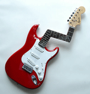

Crazy Tune – Best in 60 seconds

The task is simple. You have 60 seconds to give us the best tune that comes to your mind.
You can use anything and everything that produces sound (well, anything except records), from whistling to strumming to table drumming to anything else you can think of!
Time’s up!
|